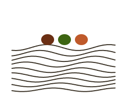

The Practitioners
Who taught the pattern
The people who design, run, and evaluate public programs, grouped by the P their work speaks to most. Those who asked to stay anonymous are not shown.

Purpose
A direction worth defending.
{{ a.d }}
Anonymous

People
Whose presence and authority move the work.
{{ a.d }}
Anonymous

Priorities
What the program actually spends on.
{{ a.d }}
Anonymous

Platform
The infrastructure underneath.
{{ a.d }}
Anonymous
Drop each person's headshot into its circle. Every photo renders in black & white.
← Back to Beyond Fancy Planning